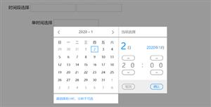

Bootstrap模板库
首页
模板
后台管理
企业网站
餐饮娱乐
创意作品集
手机移动端
非盈利组织
个人网站/博客
电子商务
即将上线/404
婚礼/婚纱摄影
医疗/健康
插件
加载和上传
提示和弹出层
图像和媒体
导航和菜单
背景和布局
时间
表单和按钮
选择和筛选
轮播和切换
评级和图表
CSS3动画
SVG动画
Canvas动画
JS小游戏
vuejs插件
手机端页面
其它
整站带后台
看看别人下载的
加入VIP
活动列表
共159个时间插件
日期选择
滑动选择时间
手机日历
mobileselect
日历插件
jquery手机滑动选择日期插件mobileSelect
时间
mobileSelect.js是一款时间选择插件，适合电脑和手机端，滑动选择日期，是基于jquery实现的手机滑动选择日期插件。
timeline
时间轴
缓缓出现
Timeline时间轴缓缓出现效果
时间
Timeline时间轴缓缓出现效果
电子时钟
js
js电子时钟效果代码
时间
js电子时钟效果代码
双日历
时间段
js双日历选择时间段插件
时间
js双日历选择时间段插件
倒计时
jquery轻量级倒计时插件leftTime.js
时间
jquery轻量级倒计时插件leftTime.js

时间段选择
日历插件
日期选择
jquery时间段选择控件
时间
jquery时间段选择控件，扁平化设计日历选择插件。
工作日历
考勤日
vue日历
vue工作日历考勤记录表
时间
基于vue试下的工作日历考勤记录表
countdown
倒计时
jquery.countdown.js卡片倒计时页面
时间
jquery.countdown.js插件实现的卡片倒计时主题页面样式。
calendar
日历插件
年日历
月日历
范围日历
calendar.js多种形式日历插件
时间
calendar.js是一款强大的日历插件，有多种形式的日历插件，比如，选择年、选择月、范围等。
出生日期
日期选择
时间选择
滑动日期
jquery弹出选择出生日期特效
时间
jquery弹出选择出生日期特效，js引用的有点多，样式和效果看起来不错，兼容手机端的时间选择插件。
时钟
猫头鹰
canvas
canvas猫头鹰时钟主题页面代码
时间
canvas猫头鹰时钟主题页面代码，带音效。
劳力士
手表
js劳力士手表动态时间
时间
js代码模拟的劳力士手表，动态时间走动特效代码。
弹出滑动
滑动时间
日历插件
时间插件
js插件
js弹出式滑动选择时间插件
时间
rolldate.js是一款js弹出式滑动选择时间插件，可以自定义时间日历格式，功能很强大，原生js插件，不依赖于jquery库。
手机日历
手机时间选择
移动端选择
日期插件
mobileselect
日期选择器
手机端滑动选择日期插件mobileSelect.js
时间
mobileSelect.js是一款手机移动端选择插件，jquery手机端滑动选择日期插件。
时间选择
日期选择
日历插件
js日历
时间和日期选择日历插件datepicker.js
时间
datepicker.js是一款强大的时间和日期选择插件，各种各样的选择样式，jquery日历插件。
卡片翻转
卡片时间
动态时间
时间特效
js+css3卡片翻转时间特效
时间
js+css3卡片翻转时间特效，可以改造成倒计时插件，动态的时间和电脑时间同步。
bootstrap日历
年日历
jquery日历
jquery bootstrap年日历插件
时间
一套简单的jquery bootstrap年日历插件，自定义参数很灵活，基础调用方法非常简单。<div id="calendar"></div><sc...
css3时间轴
timeline
垂直时间轴
时间轴
线条样式css3垂直时间轴代码
时间
线条样式css3垂直时间轴代码特效。该特效通过简单的HTML结构和CSS3代码，来生成炫酷的垂直时间轴效果。
1
2
3
4
5
6
7
8
... 8
标签查找
|
关于我们
|
格式化工具
|
bootstrapmb.com 版权所有
苏ICP备17077179号-2